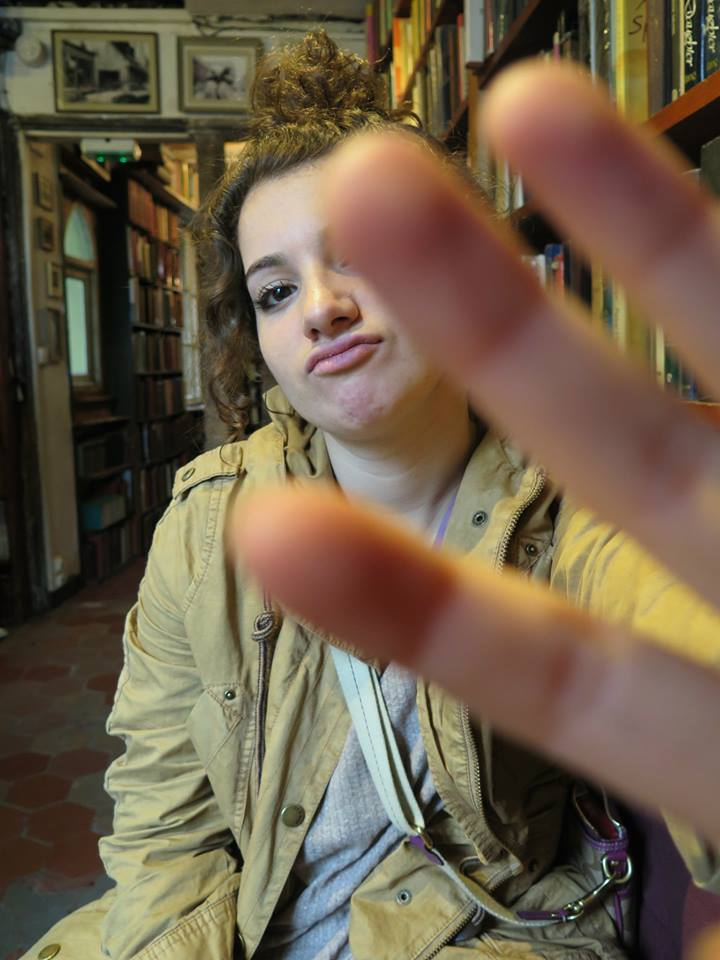

VT is for inVenT
What if college freshman, upon arrival at University, were not strictly categorized into their respective majors, forced to commit to a future without yet having a real chance to explore the world around them? What if majors, themselves, were not restricted in anyway, so that all classes would be open to all students, and students could study whatever they wished, limited only by time and the scope of their own interests. Imagine a world in which students were not stigmatized based on their decision to major in philosophy instead of chemical engineering because the pursuit of knowledge itself, regardless of the field, is what is important. This might seem like a silly daydream to the average Virginia Tech engineering student with no time in their strict schedules to think of anything but the two labs and four tests they have coming up, much less anything outside their core discipline. Yet, with the VT-Shaped initiative, a future like this may not be too far off. Now, a world without pre-requisites or restricted majors might, for the time being, be too much of a stretch for Virginia Tech, but the VT-shaped initiative imagines a college experience in which all VT students are expected to branch out of their core field of study through the exploration of other disciplines and gain experience in the real world beyond the classroom. My final project is, itself, my creative vision of one way to help achieve this VT-Shaped future.
When thinking about designing something that represents my experience of the VT-shaped student, my mind could not help but immediately go towards something that could combine all areas of creativity, from science to math to art. In my final project I designed a prototype for a monthly magazine/journal, called the Issue , run by and geared towards Virginia Tech students, in which students would be able to cultivate their creativity by being exposed to I diverse range of ideas spanning across academic disciplines. The Issue would be published in paper and distributed throughout the campus, yet it would also feature its own app in which it could be accessed digitally. I envision this monthly journal as as a melting pot of science, technology, and art and a place where people could express their ideas without boundaries. A main goal of theIssue would be to expose to the world to the elaborate and diverse brilliance that Virginia Tech has to offer.
Each month the Issue would be centered around a single word as its theme, which would in some way inform each of the pieces included, tying them all together. The example I used in my prototype, was the theme Mental. Each hypothetical article or piece included in this issue would have to do with the word mental. For example, it could include pieces ranging from an article about a biochem study on the effects of, say, a new type of drug on patients with depression, to a student-submitted charcoal drawing depicting the struggles of Anorexia Nervosa. Whereas some journals are divided into sections distinguishing the sciences from the arts, the Issue would not be divided, but the stories and articles would be published side by side. In this way the flow between ideas would be seamless despite the difference in the field of study. In addition to holding submissions and articles, the Issue could post dates dates of important events, such as theater showings, speakers that may be visiting (from all departments), poetry readings, research and internship opportunities, semester abroad opportunities, and other general activities around campus. In fact, the mobile app could send out notifications for these dates in advance.
The main idea behind this design is to bring people together through the bringing together of ideas. The whole VT- Shaped initiative is geared towards creating students who are able to succeed in and out of their core curriculum, learning from the world and the people around them and gaining experience outside of the comfort zone. My journal design supports that initiative by bringing people together on multiple different levels. On a small scale level, because each issue involves an array of pieces spanning across many fields of study, it would force editors and writers from all different majors to work together on each issue. On a much larger scale, the purpose of this journal is to bring people together through the collaboration of ideas and to encourage Virginia Tech students to learn from and inspire one another.
There are campus news letters and things like the largesse or scientific weekly, but they all come from different sources and therefore support the idea that theses types of ideas should be divided into categories and labeled. What this journal does is start to break down this carefully molded barriers that exists in a major technological university like Virginia Tech, where each person’s identity is carved out for them the second they choose a major. But choosing a major should not be like choosing a side. We come in as freshmen, already in a specific major, but the second we take on a major we are marginalized and with that our exploration is quelled and confined. What I think holds Virginia Tech back is this idea that we can only strive to be one thing in order to be successful. Only an engineer, only a graphic designer, only a biologist, only a creative writer, yet, the Issue is meant to show all of Virginia Tech’s bright students that they do not have to be limited. It is possible for an engineer to find inspiration in a poet’s words or for a engineer to be a poet herself! One thing that I have learned throughout this course, and throughout my life, is that innovation builds upon diversity and creativity. It needs diversity because one need to be open and receptive to all perspectives in order to advance, and it needs creativity, because in order to advance what already exists, one must be able to think outside of the box. When one of these two important factors is limited, innovation is slowed or even halted.
My inspiration for this idea stems from the fact that my passions stretch far and wide and are unbounded by restrictive majors or prerequisites. As someone who is struggling to double major, I see the way that the campus operates first hand and one thing that I believe would help this campus thrive would be if there was a way that we could show people that interests do not have to be sectionalized, ideas do not have to be divided up by subject. Someone who is a biology major can still have time to foster his/her love for poetry and a graphic design major can be still be inspired by an ecological study on climate change. Overall, my journal’s design is centered around the VT-shaped concept that we have been exploring all semester. This VT-Shaped initiative that encourages students to expand their reach outside the class room and outside their strict core discipline, is essential for fostering creativity and diversity, and therefore is necessary for inventing the future.